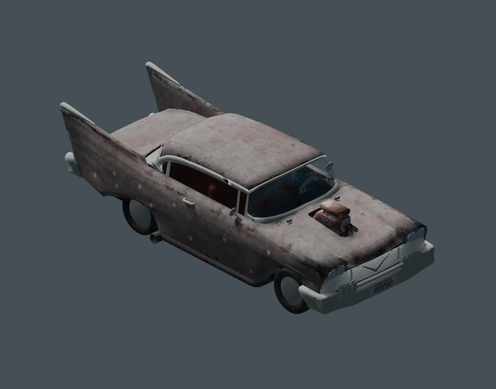
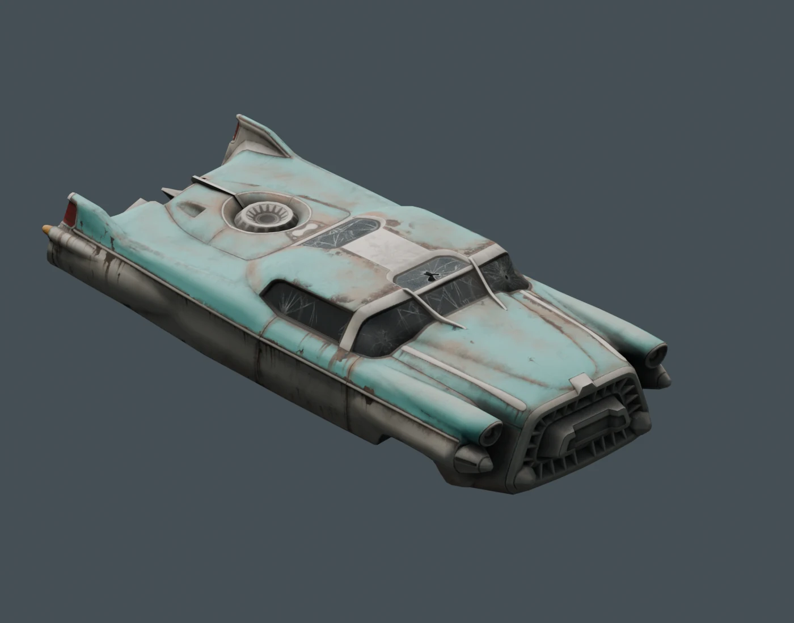
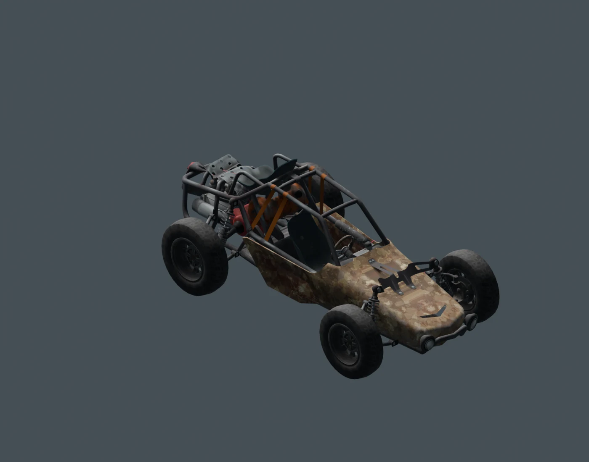

A FALLOUT: NEW VEGAS MOD
THE MOJAVE.
IN A NEW GEAR.
There’s a lot of road out there.
Find a ride. Bring it back to life. Make it yours.

01 / OUT IN THE WASTELAND
FIND YOUR NEXT RIDE.
Some are ready to roll. Some need a toolbox.
Others need you to finish what you started.
World placements must be enabled in F10 preferences. Quest rewards and restored vehicles follow their own unlock conditions. This guide shows starting conditions, not the state of your save.
02 / THE GARAGE
PICK YOUR KIND OF TROUBLE.

ATOMIC MOTORING
CORVEGA
A billboard promise, waiting by the road.
Bring tools. Bring coolant.

LESS BODYWORK. MORE DESERT.
APOCALYPTIC BUGGY
Tucked away in Bonnie Springs.
The engine works. The tank is empty.
EARN YOUR KEYS
NOT EVERY RIDE
IS PARKED OUTSIDE.
03 / A DIFFERENT KIND OF HORSEPOWER
NO KEYS.
JUST TRUST.
Three wild herds. Six coats. Horses with their own speed, endurance and nerve. Inspect a horse, meet its Survival requirement, then take the time to tame it.
FIND THE HERDSA PLACE TO START
Herd 1 always has a horse with no Survival gate. You still need to tame it.
KNOW THE WASTELAND
Mid-tier horses across the herds. Look at their traits before choosing your companion.
A STEADIER PARTNER
Herd 3 guarantees a Survival 75 horse. Speed, endurance and nerve affect the ride.
RARE FOR A REASON ★
A 5% chance on eligible new horses. Any coat, a visible “Rare Wild” name and 5/5/5 traits. At most one untamed rare at a time.
04 / BEFORE YOU SET OFF
KEEP IT RUNNING.
A little preparation goes a long way.
Use the placement guide to check what a discovery needs before making the trip. Fuel, repairs and unlocks vary by vehicle.
MORE FROM INTOTHEROUGH ↗01 Fuel, charge & coolant
Jerry Cans cover liquid-fuel vehicles. Petrol, diesel and biofuel share the same supply. Partly used cans are consumed; bulk refuelling is supported.
Energy Cells and Microfusion Cells charge the Highwayman, Hover Bike and Camp Golf Cart. One MFC supplies twice the charge of one Energy Cell.
Reactor Coolant keeps the nuclear Corvega running. The Alien Recon Craft needs no fuel or coolant. Human-powered rides use no fuel.
02 Restoring a discovery
Some discoveries need only Repair skill. Others need one or two Car Repair Tools, or a Sensor Module for the crashed Vertibird. Required components are consumed when restoration succeeds.
Bring restoration parts in your inventory. Inspect a covered vehicle or original wreck to reveal its repair route. The location guide lists the exact requirements.
03 Races & arena unlocks
Win a completed race against at least one opponent to earn one free Formula Racer. Return from the race before claiming it through F10.
The Monster Truck stays in the Thunderdome. Visiting once unlocks world spawning for the Stunt Biplane, provided world vehicle spawning is enabled.
04 Caring for wild horses
Taming checks effective Survival, including temporary bonuses. It costs no items. After taming, riding does not repeat the skill check. Register your horse through F10 → Horses → Add to Stable.
Ordinary wild horses replenish after three continuous in-game days away. Tamed and rare individuals stay dead; later new horses can roll rare again. Wildlife normally leaves horses alone, but horses remain damageable.
05 Current travel limitations
The OWB reward Hover Bike is placed in Big MT; bringing that bike back through the Transportalponder is not implemented.
The B-29 unlocks after Volare!, but its reported runway / ground-support problem remains open. The corrected Hopper Strip-door transfer still awaits an in-game round-trip check.